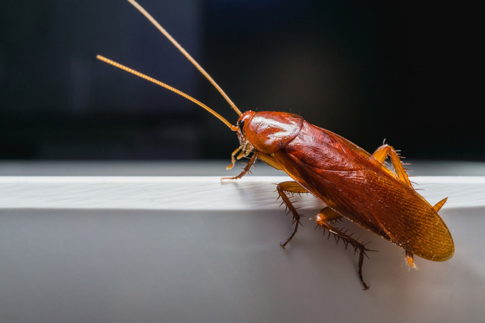

Тараканов отправляли в космос для решения двух глобальных задач: изучения адаптации живых организмов к невесомости и создания замкнутых систем жизнеобеспечения, способных перерабатывать отходы.
Первое — фундаментальное: понять, как невесомость влияет на поведение, выносливость и даже потомство насекомых. Воронежские биологи под руководством Дмитрия Атякшина в рамках эксперимента «Адаптация» изучали, как тараканы переносят физические нагрузки и что происходит с их мышечной тканью в условиях микрогравитации.
Второе направление — прикладное: учёные рассматривают тараканов как ключевой элемент замкнутых систем жизнеобеспечения для будущих лунных и марсианских баз. Эти насекомые способны переваривать целлюлозу — несъедобную для человека часть растений (ботву, солому). Перерабатывая растительные отходы, тараканы производят удобрения для космических грядок, а сами становятся кормом для рыб (например, тилапии), которые уже идут в рацион космонавтов.
Самый известный полёт состоялся в сентябре 2007 года на российском биоспутнике «Фотон-М3». Учёные отобрали 54 рыжих таракана (Blattella germanica) — молодых и старых особей, отловленных, по иронии судьбы, в студенческих общежитиях Воронежа. 12 дней они провели на орбите в специальных биоконтейнерах с обогревом, кормом и даже сменой суток.
Нюанс эксперимента заключался в том, что в космос отправились не просто взрослые особи, а беременные самки. Учёные хотели проследить, как невесомость повлияет не только на самих насекомых, но и на их потомство, зачатое в космосе.
После возвращения на Землю уже через несколько дней «космонавты» пришли в себя — по словам исследователей, в первые часы они выглядели ослабленными: замедленные движения, усы в разные стороны.
Потомство оказалось сверхбыстрым. Около 300 молодых тараканов росли и развивались быстрее земных сородичей: у них стремительнее вытягивались усы и конечности, быстрее темнел хитиновый покров. Они активно обследовали новое пространство.
Процент гибели среди «космического» потомства был значительно ниже, чем у обычных домашних тараканов. А в устроенных учёными тараканьих бегах по стеклянным трубочкам «космонавты» в 14% случаев приходили к финишу быстрее своих земных собратьев.
Руководитель эксперимента Дмитрий Атякшин отметил, что на зачатых в космосе тараканов повлияли факторы полёта, но что именно — невесомость, вибрация или повышенные дозы радиации — ещё предстояло выяснить.
Эксперименты с тараканами показали, что невесомость не просто переносится насекомыми, но и может влиять на их развитие и потомство — иногда в сторону большей выносливости. А современные проекты переводят эту идею в практическую плоскость: тараканы могут стать ключевым звеном в переработке отходов на будущих космических базах, превращая то, что мы привыкли считать мусором, в еду, удобрения и кислород.